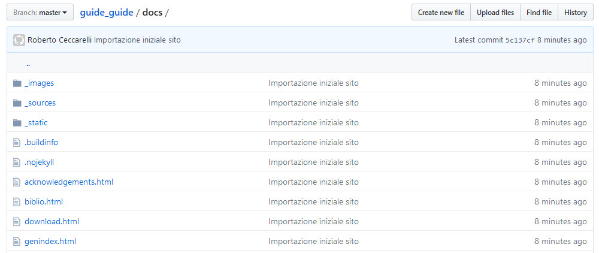
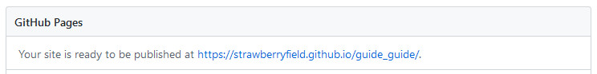

5. Pubblicare la guida¶
Github permette di gestire delle pagine web dove includere la documentazione del progetto. Per la verità è presente un sito globale legato al proprietario dei repository ed un sito per ogni progetto: noi utilizzeremo quest’ultimo per riversarci dentro le pagine HTML della nostra guida in modo che possa essere letta comodamente online.
5.1. Il sito per la documentazione del progetto¶
Il sito di documentazione è ospitato all’interno del nostro repository nella cartella docs che quindi dovremo creare nella
nostra cartella di lavoro. Dalla console scrivete:
mkdir docs
poi rigeneriamo la guida in HTML:
make clean
make html
quindi copiamo il sito generato nella cartella docs:
xcopy _build\html docs /S /Y
infine aggiungiamo i files al repository locale e sincronizziamo con GitHub:
git add .
git commit -m "Importazione iniziale sito"
git push guide_guide master
Fatte queste operazioni nel repository su GitHub sarà presente la nostra guida compilata in HTML all’interno della cartella docs
Possiamo quindi procedere all’abilitazione del sito.
Andiamo quindi nella sezione Settings del nostro repository su GitHub ed in fondo alla pagina delle Options
troveremo la voce per abilitare le GitHub Pages:
Scegliamo l’opzione master branch /docs folder e salviamo.
Il sistema ci comunica dove troveremo le nostre pagine pubblicate
Nel caso di questa guida l’URL è https://strawberryfield.github.io/guide_guide/
5.2. Aggiungere i download di altre versioni¶
Poichè il sistema ci permette di avere differenti tipi di output è buona cosa rendere disponibili all’utente finale (che non è in grado di ricompilarsi la guida) almeno il PDF. Io pubblico anche l’ebook in formato .epub, ma ognuno è libero di scegliere i formati che ritiene più utili.
Per fare ciò creiamo una cartella bin all’interno di docs nella quale andremo a copiare i file .pdf e .epub
che abbiamo preventivamente compilato.
E’ anche utile aggiungere un capitolo (o sezione) nel quale linkare tutti possibili file da scaricare come ad esempio questo:
.. _downloads:
**************************
Download sorgenti e binari
**************************
.. _downloads-bin:
Versioni compilate
==================
`La guida può essere letta on line a questo link <https://strawberryfield.github.io/guide_guide/>`_,
`oppure potete scaricare il pdf <https://strawberryfield.github.io/guide_guide/bin/guide_guide.pdf>`_,
`o l'e-book <https://strawberryfield.github.io/guide_guide/bin/MSTSORTerrainGuide.epub>`_.
.. _downloads-src:
Sorgenti
========
`Per chi fosse interessato i sorgenti sono disponibili su GitHub <https://github.com/strawberryfield/guide_guide>`_.
che è quello di questa guida (non dimenticate di inserirlo nel file index.rst).
5.3. Automatizzare il processo¶
Ripetere tutte le volte la procedura di ricompilazione, copia e commit del sito è cosa piuttosto noiosa e fonte di errori. Ho perciò predisposto un piccolo batch che automatizza il processo.
@echo off
REM script for building website to host on github
set builddir=_build
set site=docs
set downloads=%site%\bin
call make.bat clean
call make.bat html
xcopy %builddir%\html %site% /S /Y
call make.bat latexpdf
copy /Y %builddir%\latex\*.pdf %downloads%
call make.bat epub
copy /Y %builddir%\epub\*.epub %downloads%
git add .
git commit -m "Aggiornamento automatico sito"
git push guide_guide master
Prima di lanciare questo batch è oppurtuno fare il commit dei sorgenti in modo da tenere separato l’aggiornamento del sito dalle modifiche alla guida. Non è una cosa obbligatoria, ma aiuta a tenere le cose in ordine.